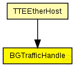

This documentation is released under the Creative Commons license
This documentation is released under the Creative Commons licenseTODO auto-generated module
The following diagram shows usage relationships between types. Unresolved types are missing from the diagram. Click here to see the full picture.
The following diagram shows inheritance relationships for this type. Unresolved types are missing from the diagram. Click here to see the full picture.
| Name | Type | Description |
|---|---|---|
| TTEEtherHost | compound module |
Module for a TTEthernet Host. Contains a EtherLLC for best-effort traffic, a TTEPHYPort module as physical port, sync module (Sync) and a TTEScheduler module. The Host is configured by the provided TTEthernet XML network configuration (network_configuration parameter) and uses the device_name parameter to find its config. The configuration is done by the BufferManager that deletes itself at runtime. |
| Name | Direction | Size | Description |
|---|---|---|---|
| lowerLayerIn | input | ||
| lowerLayerOut | output | ||
| in | input | ||
| out | output |
// // TODO auto-generated module // simple BGTrafficHandle { gates: input lowerLayerIn @labels(Ieee802Ctrl/up); output lowerLayerOut @labels(Ieee802Ctrl/down); input in @labels(EtherFrame); output out @labels(EtherFrame); }
This documentation is released under the Creative Commons license